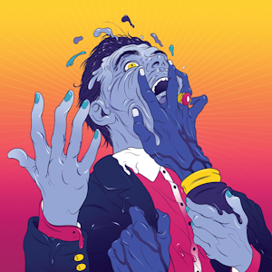
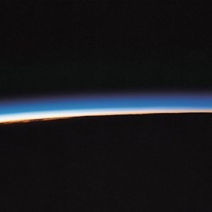
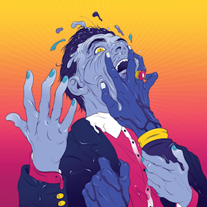
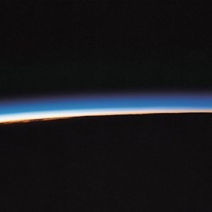
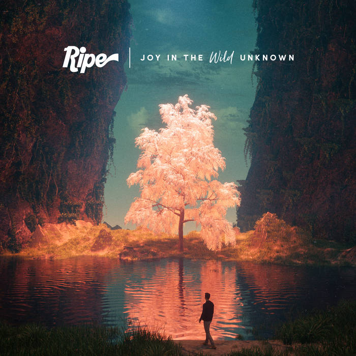
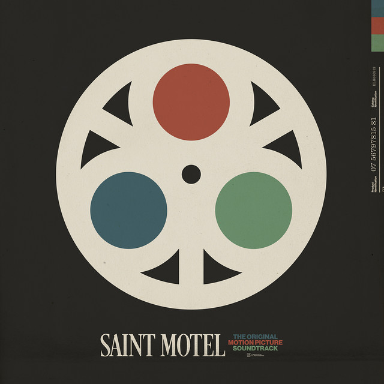
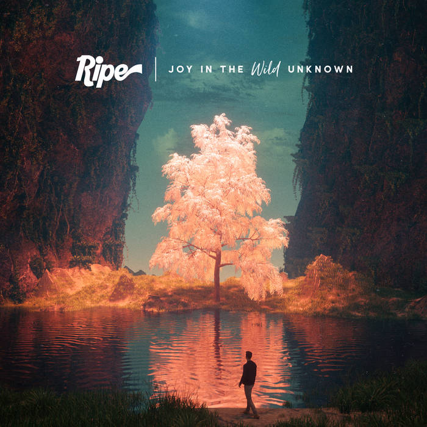
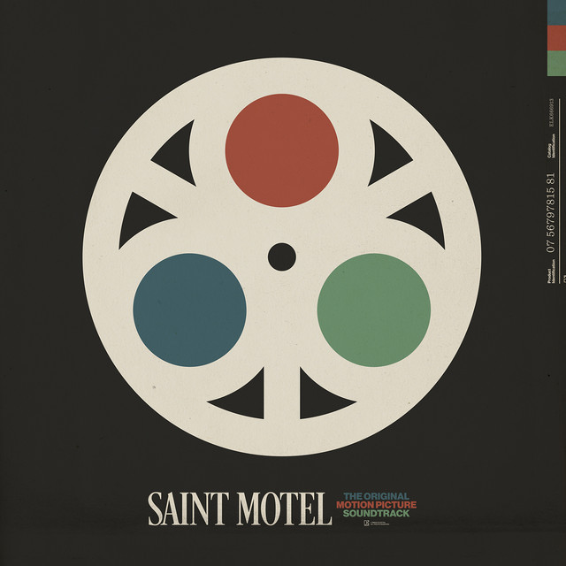
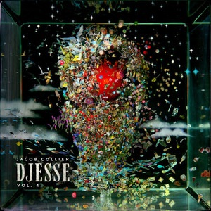
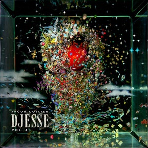

Albums
 



 





 



Geography (2018)
Tom MischGeography is a melodic explosion, a musical exploration and my favourite album of all time. Smooth grooves and funky, bopable beats provide the backbone for most of the tracks, each of which have a perfect balance of meaningful lyrics, catchy hooks and strong musicality ‒ it all just sounds so good. It is undeniable that the quality control is top tier; this one of the only albums I know which contains not a single bad song. Overall, Geography offers a depth and breadth of sound which is rare as it is masterful.
Score: 9.6/10 Top Pick: Water Baby
Get To Heaven (2015)
Everything EverythingGet To Heaven is a subversive smorgasbord of delicious sounds and atypical indie music. A reoccuring structure within many of these songs is the technique of beginning relatively basic, and then building throughout the song to a breathtaking, souring climax. Lyrics are wild as they are dark, and yet not without depth and meaning; this is in stark contrast to most typical pop/rock lyrics. Though not without a miss or two, the majority of songs which do hit are compelling as they are mind-bending.
Score: 9.3/10 Top Pick: Distant Past
Curve of the Earth (2016)
Mystery JetsCurve of the Earth is a fine example of classic indie rock, and is some the best this genre has to offer. Although I can't quite put my finger on it, something about this album makes it unbelievably listenable, elevating it far above many (and there are many) indie rock groups. It may be their nuanced and near staggering depth of sound, or maybe their dynamic and interesting lyrics. If I had one qualm it would be that some lyrics could be articulated a bit clearer. Regardless, this album makes for a great listen.
Score: 9.1/10 Top Pick: Bubblegum
Songs in the Key of Life
(1976)
Stevie WonderSongs in the Key of Life demonstrates the highest levels of funk and groove you may ever potentially listen to. While the music is driven by bass, kit and synth indispersed by some ripping instrumental solos, lyrics touch on religion, love, politics and race; between its lyrics and music, this album truly is in the key of life. This album also features seamlessly melding of one song to the next, reinforcing this album as a cohesive experience in its own right.
Score: 8.9/10Top Pick: Isn't She Lovely
Joy in the Wild Unknown
(2018)
RipeJoy in the Wild Unknown is a delightfully funky alt-pop album. Melodic hooks grab you at every turn, while harmonically layering progressions keep the ear engaged. Horns, eletric guitar and crispy vocals drive every song, each of which demonstrates phenomenal musicality and an intoxicating energy. On top of the musically delivery, there is also a compellingly carefree yet edgy vibe, which is then subsequently accentuated by the lyrics.
Score: 8.8/10Top Pick: Follow Through
The Original Motion Picture
Soundtrack (2021)
Saint MotelThe Original Motion Picture Soundtrack is a fun indie pop-rock album, complete with retro vibes and bopable grooves. Every song is driven by smooth, simple riffs, and each one can be individually treated as a single in its own right. While the overall sound is undeniably sweet, it admittedly lacks a certain depth. And yet, what may lack in depth is made up for in sheer variety and vibrancy, nicely balancing the line between carefree and cringe.
Score: 8.7/10Top Pick: A Good Song Never Dies
Room for Squares (2001)
John Mayer
Room for Squares, John Mayer's first album, pioneered his own unique genre, which he subsequently identifed in his 2021 album of the same name: sob rock. Beyond this particular style, Mayer providers a trifector of amazing vocals, staggering guitar riffs and actually interesting lyrics.
Score: 8.6/10Top Pick: Neon
How to Let Go (2022)
Sigrid
How to Let Go is fun, sunny and enjoyable, all while remaining musically unique. Though tone is emotionally charged, the grooves stay bopable and bubbly. Variety in both lyrics and musical choices elevate this album beyond simply that of the pop genre, and even more so as the album stays true to its easy, carefree style.
Score: 8.3/10 Top Pick: A Driver Saved My Night
Gimme Some (2011)
Peter, Bjorn and John
Gimme Some is a indie alternative pop-rock album which is smooth as it is listenable. Scillinating, sometimes darkly humorous lyrics abound, ranging from downright cynical to downright profound. On the music itself, layered sounds rely on the basics of the instrumental toolkit, creating a simplicity which leaves no room for clutter.
Score: 8.2/10 Top Pick: Second Chance
DECIDE (2022)
DjoDECIDE presents a dark, psychodelic and synth-heavy soundscape, with heavy use of autotune to surprisingly engaging effect. Though somewhat genre defying, DECIDE lies decidedly in the region of indie and alt-pop; and yet the overall sound of the album is unique in its own right. Cool, edgy lyrics work with experimental, unconventional music to create a deeply moody and almost chaotic vibe. And yet in spite, or maybe because of this, in the end DECIDE just sounds really, really good.
Score: 8.2/10 Top Pick: I Want Your Video
All This Bad Blood (2013)
Bastille
All this Bad Blood is a cinematic pop-rock album full to the brim with bangers. Though the music itself is simple, compelling lyrical depth in combination with subversive instrumental variety create consistently interesting songs.
Score: 8.2/10 Top Pick: Pompeii
Ellipse (2009)
Imogen Heap
Ellipse is genre defying, utterly brilliant music. This is what happens when insane musicality is done in a way to achieve max listenability. With its dark and playful tone, alongside mesmerising layered vocals, Ellipse is a musical feast.
Score: 8.1/10 Top Pick: Earth
Djesse Vol. 4 (2024)
Jacob CollierDjesse Vol. 4 is the culmination of Jacob Colliers musical genius, touching on every genre and style imaginable, including country, gospel, R&B, pop, folk, K-pop, latin, rock and metal, rap. To achieve this, the album includes collaborations with over 28 artists around the world. Above and beyond musicality, and though lyrics can become a touch cliché, Jacob has come to the point of being able to deliver songs which are equally technical as they are listenable.
Score: 8.1/10 Top Pick: Wherever I Go
Family Business (2024)
Lawrence
Family Business is soul-pop at its best. Smooth riffs in combination with stunning vocals make for consistently epic songs, catchy, groovy and bopable. An eight piece band only adds to the musicality and soul of the album, allowing for a decadently layered sound.
Score: 8.0/10 Top Pick: Watcha Want
Viva La Vida or Death and
All His Friends (2008)
ColdplayViva La Vida (lit. long live life), is a stark contrast to the typical Coldplay sound, showcasing minor riffs which rather than being depressing, instead create a moody and atmosphereic musical experience. Lyrics are impactful and have a cohesive thematic direction in relation to the album title. Repetitive lilting melodic riffs drive much of the sound, allowing for strong builds within songs. Overall, Viva La Vida is unique while remaining completely Coldplay.
Score: 8.0/10Top Pick: Cemeteries of London